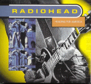

Heading for America
?
Tracks live from The Hammerstein Ballroom, New York 19/Dec/97
<1> Airbag
<2> Karma Police
<3> The Bends
<4> Exit Music (For a Film)
<5> Subterranean Homesick Alien
<6> My Iron Lung
<7> Lucky
<8> Planet Telex
<9> No Surprises
<10> Bones
<11> Paranoid Android
<12> Fake Plastic Trees
<13> Let Down
<14> Street Spirit (Fade Out)
Tracks from Japanese release of Pablo Honey
<15> Vegetable [live]
<16> Creep [acoustic]
Type of recording : Audience recording?
Quality : V. Good
Notes : Tracks 15-16 both listed as 'Rare Japanese B-side'
Rating : ***